2005年度 栗田 裕
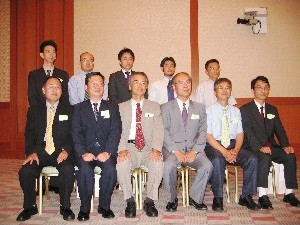
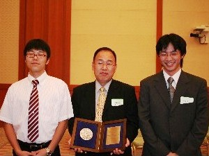
<日本機械学会 フェロー>
2004年度 栗田 裕
<日本機械学会 機械力学・計測制御部門 部門貢献賞>
2001年度 栗田 裕
日本機械学会 機械力学・計測制御部門 オーディエンス賞
2004年度 Dynamics and Design Conference 2004 優秀発表者 菊井 靖史
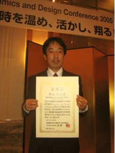
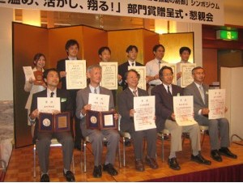
2003年度 Dynamics and Design Conference 2003 優秀発表者 利川 史佳
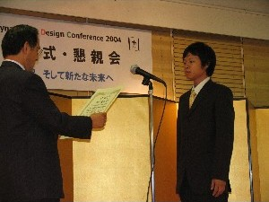
日本機械学会 若手優秀講演フェロー賞
2009年度 関西支部第85期定時総会講演会 神田 真輔
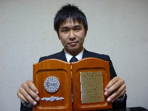
2009年度 関西支部第85期定時総会講演会 森 良平

2009年度 Dynamics and Design Conference 2009 松田 成勝
2008年度 Dynamics and Design Conference 2008 宮岡 孝行
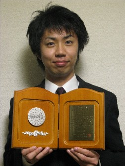
2007年度 Dynamics and Design Conference 2007 井上 祐哉
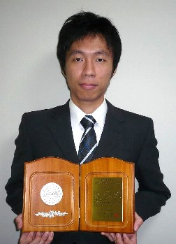
2006年度 関西支部第82期定時総会講演会 福島 知之
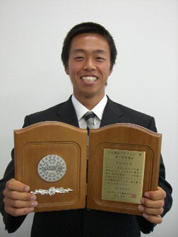
2006年度 Dynamics and Design Conference 2006 増田 貴行
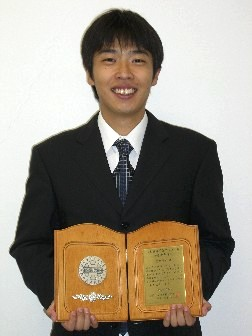
2005年度 関西支部第81期定時総会講演会 大浦 靖典
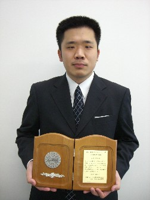
2005年度 Dynamics and Design Conference 2005 富田 文武

日本機械学会 関西学生会卒業研究発表講演会 優秀発表賞
2013年度 森田 剛気

2011年度 丸山 広幸
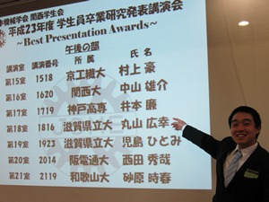
2010年度 柏木 隆之介，田邉 明日香，西川 良平
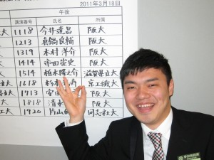
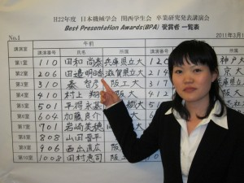
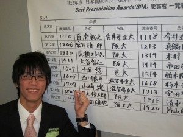
2009年度 平塚 智裕，山田 雄亮
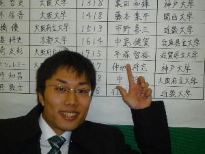
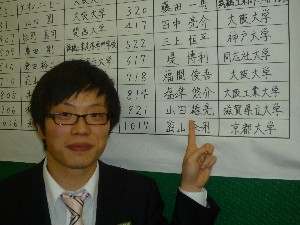
2008年度 神田 真輔
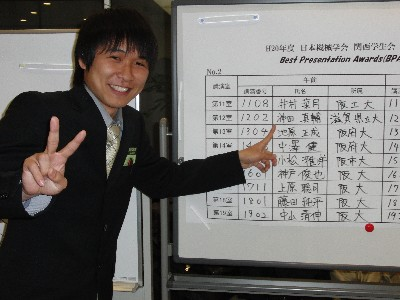
2005年度 井上 祐哉
2004年度 脇坂 裕之（写真左），福島 知之（写真右）
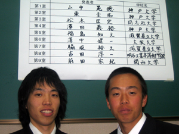
2003年度 小林 裕季，五由出 将嗣，富田 文武
2002年度 菊井 靖史，万木 太
2001年度 田中 巧大，油布 和夫
2000年度 桑山 孝哉，長谷川 広一，羽多野 知典
1999年度 伊藤 敦
日本機械学会 研究シーズポスター発表会 優秀ポスター発表賞
2006年度 梅塚 紗百理（生産システムの大塚さんと同時受賞）
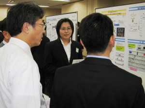
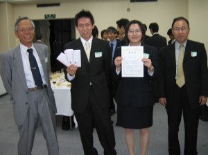
<学業関連の賞>
日本機械学会 三浦賞
2012年度 林 拓哉
2008年度 岡本 裕司
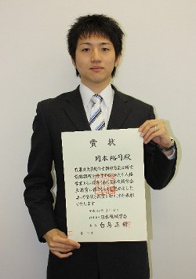
2007年度 梅塚 紗百理
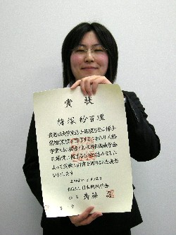
2006年度 三崎 務
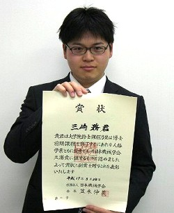
2005年度 小林 裕季
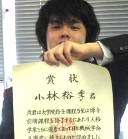
2004年度 大浦 靖典
日本機械学会 畠山賞
2013年度 上原 大貴
2010年度 村岸 稔文
2009年度 島田 聖二
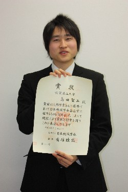
2004年度 福島 知之
2002年度 大浦 靖典